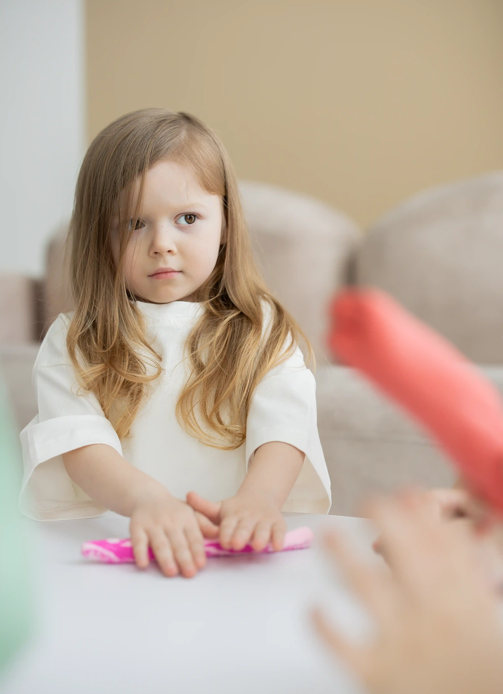
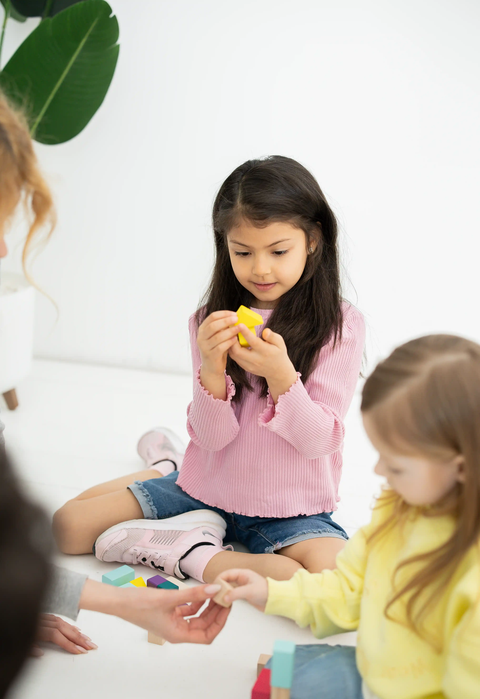

A space for child psychoanalytic therapy in London, where we view the kids’ behaviour as part of their inner world, not merely a problem to be stopped.
Our work is grounded in the approaches of F. Dolto, S. Freud, M. Klein, and other psychoanalytic traditions.
Reflecting parental concern
You feel like something is going on with your child.

Anxiety, withdrawal, aggression, jealousy, silence, or adaptation difficulties are often not the signs of "bad behaviour", but rather the psyche's way of signalling inner tension.

Therapy helps us understand what lies behind the symptoms and gradually stabilise the child’s condition.
How we work
Our work is based on a psychoanalytic understanding of the child as a subject with their own inner world.
What we use in our work:
Play as the language of the unconscious
Children express their experiences and emotions through symbolic play

Drawing and image
As a means of expressing what cannot yet be put into words

A stable therapeutic setting
The consistency of the space creates conditions for inner change

Working with parents
Understanding the kids always includes understanding their home environment

Clinical approach
A child’s symptoms are viewed as a meaningful form of expressing an internal conflict.
The work is directed at understanding this process and facilitating its transformation.
Therapy supports the child's development, their capacity for expression, adaptation, and stability.
Who this is for
The centre works with children aged 2–18 who:
Zhanna
Mosiichuk
Psychoanalytic Therapist, founder of
Ellie Therapy Kids Center
Psychoanalytic training at the International Institute of Depth Psychology. Member of the Ukrainian Association of Psychoanalysis.
Over 18 years of experience working with children, from early development to clinical practice. Founded her own child development centre in Kyiv.
Clinical experience with children includes working with:
● anxiety, fears, and nightmares
● selective mutism
● aggression and impulse control difficulties
● withdrawal and difficulties with contact
● autism spectrum disorders
● psychosomatic symptoms
● adaptation challenges following a relocation/move or a loss of environment
● responses to parental separation and family changes
● speech and language developmental delay
● hyperactivity and difficulties with concentration
Working languages: Ukrainian, Russian, English.